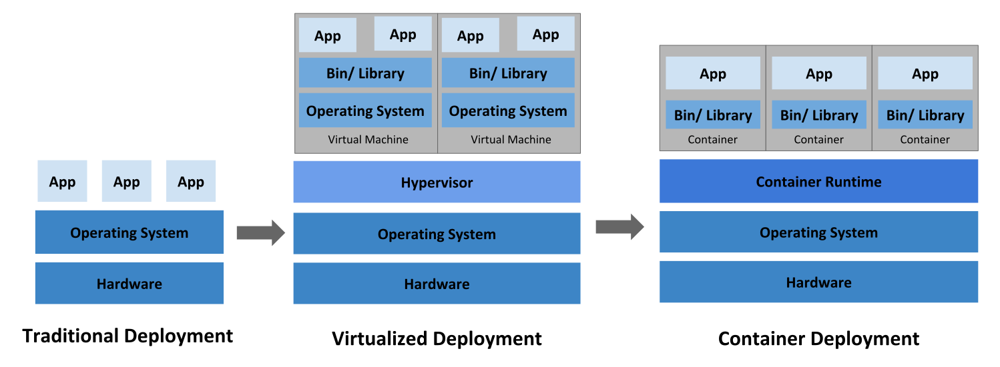

This page is an overview of Kubernetes.
The name Kubernetes originates from Greek, meaning helmsman or pilot. K8s as an abbreviation results from counting the eight letters between the "K" and the "s". Google open sourced the Kubernetes project in 2014. Kubernetes combines over 15 years of Google's experience running production workloads at scale with best-of-breed ideas and practices from the community.
Why you need Kubernetes and what it can do
Containers are a good way to bundle and run your applications. In a production environment, you need to manage the containers that run the applications and ensure that there is no downtime. For example, if a container goes down, another container needs to start. Wouldn't it be easier if this behavior was handled by a system?
That's how Kubernetes comes to the rescue! Kubernetes provides you with a framework to run distributed systems resiliently. It takes care of scaling and failover for your application, provides deployment patterns, and more. For example: Kubernetes can easily manage a canary deployment for your system.
Kubernetes provides you with:
- Service discovery and load balancing Kubernetes can expose a container using a DNS name or its own IP address. If traffic to a container is high, Kubernetes is able to load balance and distribute the network traffic so that the deployment is stable.
- Storage orchestration Kubernetes allows you to automatically mount a storage system of your choice, such as local storage, public cloud providers, and more.
- Automated rollouts and rollbacks You can describe the desired state for your deployed containers using Kubernetes, and it can change the actual state to the desired state at a controlled rate. For example, you can automate Kubernetes to create new containers for your deployment, remove existing containers and adopt all their resources to the new container.
- Automatic bin packing You provide Kubernetes with a cluster of nodes that it can use to run containerized tasks. You tell Kubernetes how much CPU and memory (RAM) each container needs. Kubernetes can fit containers onto your nodes to make the best use of your resources.
- Self-healing Kubernetes restarts containers that fail, replaces containers, kills containers that don't respond to your user-defined health check, and doesn't advertise them to clients until they are ready to serve.
- Secret and configuration management Kubernetes lets you store and manage sensitive information, such as passwords, OAuth tokens, and SSH keys. You can deploy and update secrets and application configuration without rebuilding your container images, and without exposing secrets in your stack configuration.
- Batch execution In addition to services, Kubernetes can manage your batch and CI workloads, replacing containers that fail, if desired.
- Horizontal scaling Scale your application up and down with a simple command, with a UI, or automatically based on CPU usage.
- IPv4/IPv6 dual-stack Allocation of IPv4 and IPv6 addresses to Pods and Services.
- Designed for extensibility Add features to your Kubernetes cluster without changing upstream source code.
What Kubernetes is not
Kubernetes is not a traditional, all-inclusive PaaS (Platform as a Service) system. Since Kubernetes operates at the container level rather than at the hardware level, it provides some generally applicable features common to PaaS offerings, such as deployment, scaling, load balancing, and lets users integrate their logging, monitoring, and alerting solutions. However, Kubernetes is not monolithic, and these default solutions are optional and pluggable. Kubernetes provides the building blocks for building developer platforms, but preserves user choice and flexibility where it is important.
Kubernetes:
- Does not limit the types of applications supported. Kubernetes aims to support an extremely diverse variety of workloads, including stateless, stateful, and data-processing workloads. If an application can run in a container, it should run great on Kubernetes.
- Does not deploy source code and does not build your application. Continuous Integration, Delivery, and Deployment (CI/CD) workflows are determined by organization cultures and preferences as well as technical requirements.
- Does not provide application-level services, such as middleware (for example, message buses), data-processing frameworks (for example, Spark), databases (for example, MySQL), caches, nor cluster storage systems (for example, Ceph) as built-in services. Such components can run on Kubernetes, and/or can be accessed by applications running on Kubernetes through portable mechanisms, such as the Open Service Broker.
- Does not dictate logging, monitoring, or alerting solutions. It provides some integrations as proof of concept, and mechanisms to collect and export metrics.
- Does not provide nor mandate a configuration language/system (for example, Jsonnet). It provides a declarative API that may be targeted by arbitrary forms of declarative specifications.
- Does not provide nor adopt any comprehensive machine configuration, maintenance, management, or self-healing systems.
- Additionally, Kubernetes is not a mere orchestration system. In fact, it eliminates the need for orchestration. The technical definition of orchestration is execution of a defined workflow: first do A, then B, then C. In contrast, Kubernetes comprises a set of independent, composable control processes that continuously drive the current state towards the provided desired state. It shouldn't matter how you get from A to C. Centralized control is also not required. This results in a system that is easier to use and more powerful, robust, resilient, and extensible.
Historical context for Kubernetes
Let's take a look at why Kubernetes is so useful by going back in time.

Traditional deployment era:
Early on, organizations ran applications on physical servers. There was no way to define resource boundaries for applications in a physical server, and this caused resource allocation issues. For example, if multiple applications run on a physical server, there can be instances where one application would take up most of the resources, and as a result, the other applications would underperform. A solution for this would be to run each application on a different physical server. But this did not scale as resources were underutilized, and it was expensive for organizations to maintain many physical servers.
Virtualized deployment era:
As a solution, virtualization was introduced. It allows you to run multiple Virtual Machines (VMs) on a single physical server's CPU. Virtualization allows applications to be isolated between VMs and provides a level of security as the information of one application cannot be freely accessed by another application.
Virtualization allows better utilization of resources in a physical server and allows better scalability because an application can be added or updated easily, reduces hardware costs, and much more. With virtualization you can present a set of physical resources as a cluster of disposable virtual machines.
Each VM is a full machine running all the components, including its own operating system, on top of the virtualized hardware.
Container deployment era:
Containers are similar to VMs, but they have relaxed isolation properties to share the Operating System (OS) among the applications. Therefore, containers are considered lightweight. Similar to a VM, a container has its own filesystem, share of CPU, memory, process space, and more. As they are decoupled from the underlying infrastructure, they are portable across clouds and OS distributions.
Containers have become popular because they provide extra benefits, such as:
- Agile application creation and deployment: increased ease and efficiency of container image creation compared to VM image use.
- Continuous development, integration, and deployment: provides reliable and frequent container image build and deployment with quick and efficient rollbacks (due to image immutability).
- Dev and Ops separation of concerns: create application container images at build/release time rather than deployment time, thereby decoupling applications from infrastructure.
- Observability: not only surfaces OS-level information and metrics, but also application health and other signals.
- Environmental consistency across development, testing, and production: runs the same on a laptop as it does in the cloud.
- Cloud and OS distribution portability: runs on Ubuntu, RHEL, CoreOS, on-premises, on major public clouds, and anywhere else.
- Application-centric management: raises the level of abstraction from running an OS on virtual hardware to running an application on an OS using logical resources.
- Loosely coupled, distributed, elastic, liberated micro-services: applications are broken into smaller, independent pieces and can be deployed and managed dynamically – not a monolithic stack running on one big single-purpose machine.
- Resource isolation: predictable application performance.
- Resource utilization: high efficiency and density.
What's next
- Take a look at the Kubernetes Components
- Take a look at the Kubernetes API
- Take a look at kubectl: the primary CLI for Kubernetes
- Take a look at the Cluster Architecture
- Ready to Get Started?
In this section
- Kubernetes ComponentsAn overview of the key components that make up a Kubernetes cluster.
- Objects In KubernetesKubernetes objects are persistent entities in the Kubernetes system. Kubernetes uses these entities to represent the state of your cluster. Learn about the Kubernetes object model and how to work with these objects.
- The Kubernetes APIThe Kubernetes API lets you query and manipulate the state of objects in Kubernetes. The core of Kubernetes' control plane is the API server and the HTTP API that it exposes. Users, the different parts of your cluster, and external components all communicate with one another through the API server.
- The kubectl command-line toolkubectl is the primary command-line tool for communicating with a Kubernetes cluster. This page provides an overview of kubectl and its role in the Kubernetes ecosystem.